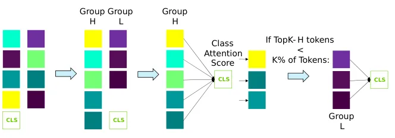
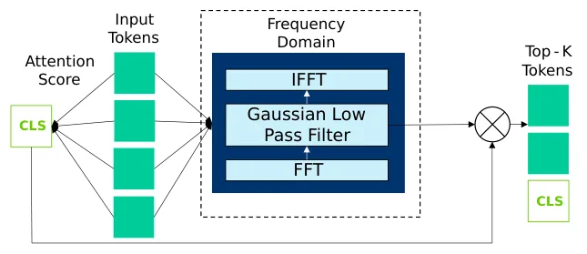
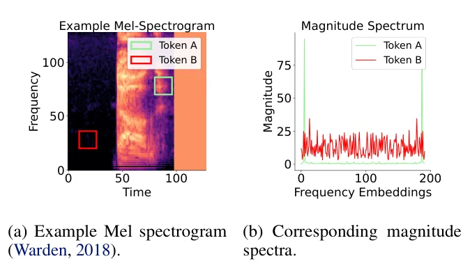
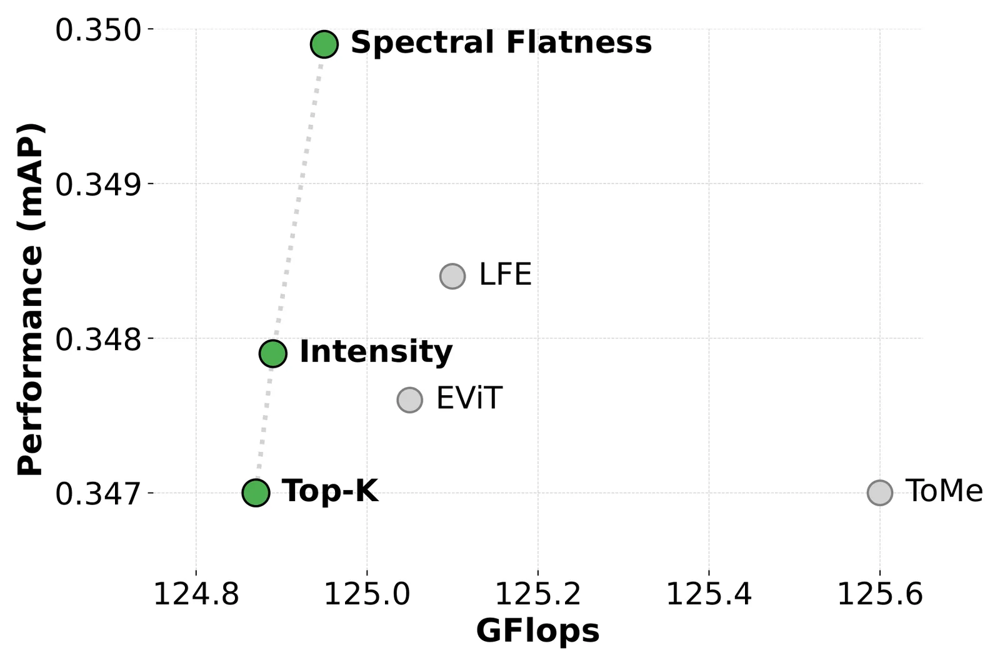

O Problema da Complexidade Quadrática em Áudio
Os modelos baseados em Transformer alcançaram estado da arte em diversas áreas, desde Processamento de Linguagem Natural até Visão Computacional. No entanto, seu mecanismo central, o self-attention, possui complexidade computacional que escala quadraticamente com o número de tokens de entrada. Isso se torna um gargalo severo em tarefas de áudio. Diferente de imagens, onde a resolução é fixa, a representação de áudio via espectrogramas gera um número de tokens proporcional à duração do sinal. Para clipes de áudio longos, o custo computacional do self-attention explode, tornando a inferência em tempo real ou em dispositivos de borda (edge) inviável com modelos padrão.
Uma solução emergente é a esparsificação de tokens, que reduz o número de tokens processados nas camadas do Transformer, descartando, fundindo ou refinando os menos informativos. Enquanto essa técnica é bem estudada em visão (como no EViT e ToMe) e em LLMs, sua aplicação em áudio permanece subexplorada. Trabalhos anteriores, como o de Lee & Lee (2025), limitaram-se a dois métodos (Top-K e Intensity) e um único tamanho de modelo (ViT-Base), deixando lacunas sobre a generalidade dessas abordagens e a eficácia de estratégias mais sofisticadas.
A Abordagem dos Autores: Pruning vs. Merging
Os autores, pesquisadores da Eindhoven University of Technology e NXP Semiconductors, propõem uma avaliação abrangente de técnicas de esparsificação para transformadores de áudio. Eles avaliam três métodos estabelecidos na visão computacional, representando dois paradigmas principais: poda (pruning) e fusão (merging). O método Top-K mantém apenas os K tokens com maior pontuação de atenção em relação ao token de classe (CLS). O EViT estende isso ao criar um token fundido que preserva a informação dos tokens descartados, ponderada pela atenção. Já o ToMe reduz tokens agrupando pares similares baseados em similaridade cosseno e fundindo-os por média.
Além de comparar esses métodos genéricos, os autores introduzem heurísticas leves específicas para áudio. A hipótese central é que, em configurações de pós-treinamento (onde os parâmetros do modelo são fixos), sinais internos de atenção podem não capturar totalmente a relevância do sinal de áudio. Eles exploram três cues: intensidade do patch, energia de baixa frequência e flatness espectral. O objetivo é identificar tokens informativos sem o custo de retreinar o modelo, aproveitando propriedades físicas do domínio de áudio.

Mecanismos de Esparsificação: Detalhes Técnicos
O método Top-K serve como baseline. Ele usa a atenção entre tokens espaciais e o token CLS para ranquear a importância. Em cada etapa de redução, os K tokens mais atendidos são mantidos. O EViT melhora a retenção de informação ao introduzir um token fundido. Os tokens não selecionados são agrupados, ponderados por suas pontuações de atenção CLS e somados ao próximo token, preservando contexto que seria perdido na poda simples. O ToMe opera de forma diferente: ele particiona o conjunto de tokens e funde pares com alta similaridade cosseno, reduzindo a dimensionalidade por agregação em vez de seleção direta.
Heurísticas Específicas para Áudio
Os autores propõem três estratégias leves para estimar a importância do token, combináveis com métodos de poda ou fusão. A primeira é a Intensidade, que calcula a energia log-Mel média de cada patch do espectrograma. A premissa é que regiões de alta energia contêm mais informação do sinal. No entanto, usar apenas intensidade pode ser pouco confiável, pois ruído também tem energia. Para mitigar isso, os autores propõem uma poda guiada por intensidade: dividem os tokens em grupos de alta e baixa intensidade e usam a atenção CLS apenas para ranquear dentro do grupo de alta intensidade, garantindo que apenas os tokens energeticamente relevantes sejam considerados para a seleção final.

Incorporando o Domínio da Frequência
A segunda e terceira estratégias exploram o domínio da frequência. A Energia de Baixa Frequência (LFE) adapta uma técnica anterior para o nível de token. Os embeddings dos tokens são transformados via FFT (Transformada Rápida de Fourier) e passam por um filtro passa-baixa gaussiano. Isso destaca a estrutura de baixa frequência, que muitas vezes carrega a energia fundamental de sinais de áudio. As pontuações de energia resultantes são fusionadas com as pontuações de atenção para guiar a seleção de tokens. Isso é particularmente útil porque a atenção pura pode ser enganada por padrões texturais de alta frequência que não são semanticamente relevantes.

Flatness Espectral: Separando Sinal de Ruído
A terceira heurística é o Flatness Espectral. Em processamento de sinais, o flatness mede quão 'plano' ou 'tonal' é um espectro. Um espectro com picos agudos (tonal) tem baixo flatness, enquanto um espectro uniforme (ruído) tem alto flatness. Os autores calculam o flatness para cada token. A hipótese é que tokens com estruturas tonais claras contêm informação semântica mais rica do que tokens com espectros planos, que podem corresponder a ruído de fundo ou silêncio. Essa métrica é computacionalmente leve e fornece um sinal robusto para filtrar tokens irrelevantes, complementando a atenção.
Configuração Experimental e Benchmarks
Os autores avaliaram essas técnicas no modelo AST-Base (Audio Spectrogram Transformer), um modelo padrão para classificação de áudio multilabel, utilizando o dataset AudioSet-20K. Eles testaram sob configurações de pós-treinamento (sem retreino) e fine-tuning. O metrica principal foi o mAP (mean Average Precision). O keep rate (taxa de retenção de tokens) foi variado, com foco especial em 50%, onde a compressão é mais agressiva. A análise cobriu a fronteira de Pareto entre eficiência (GFlops) e performance (mAP), permitindo visualizar o trade-off entre custo computacional e precisão.

Resultados: A Superioridade das Cues de Frequência
Os resultados mostram uma divisão clara. Métodos baseados apenas em atenção (Top-K, EViT) e fusão (ToMe) apresentaram ganhos modestos ou quedas de performance em relação ao baseline. Em contraste, as abordagens que incorporam cues de frequência, especialmente Spectral Flatness (SF) e Low-Frequency Energy (LFE), superaram consistentemente os outros métodos. No gráfico de dispersão de performance versus custo (GFlops), os métodos SF e LFE ocupam a fronteira de Pareto superior, indicando que para um dado custo computacional, eles alcançam a maior precisão. Isso valida a hipótese de que sinais do domínio da frequência são mais discriminativos para áudio do que sinais de atenção genéricos.
Análise de Robustez e Generalização
Os autores também analisaram a robustez das heurísticas. A combinação de atenção com flatness espectral mostrou-se particularmente eficaz, sugerindo que a atenção ainda tem valor, mas precisa ser filtrada por informações espectrais. A estratégia de poda guiada por intensidade também foi eficaz, mas menos consistente que as baseadas em frequência pura. Isso indica que a energia do sinal, por si só, não é um bom indicador de relevância sem o contexto espectral. A eficácia das abordagens baseadas em frequência foi consistente across diferentes tamanhos de modelo e datasets, reforçando a generalidade da proposta.
Limitações e Trabalhos Futuros
Apesar dos resultados promissores, o paper tem limitações. A avaliação focou principalmente em classificação de áudio (AudioSet). A eficácia dessas técnicas em tarefas de geração de áudio ou transcrição automática de fala (ASR) não foi explorada em profundidade. Além disso, a maioria dos experimentos foi feita em pós-treinamento. Embora o fine-tuning tenha melhorado os resultados, o overhead de retreino pode ser proibitivo para alguns cenários de implantação. Os autores apontam que futuras pesquisas devem explorar heurísticas ainda mais avançadas e testar a esparsificação em aplicações de tempo real, onde a latência é crítica.
Conclusão: Valor da Informação Específica do Domínio
Em resumo, 'Muting Tokens' demonstra que a esparsificação de tokens é uma via viável para tornar transformadores de áudio mais eficientes, mas que a escolha da estratégia de seleção é crucial. Ignorar as características específicas do áudio (como o espectro) em favor de sinais genéricos de atenção leva a subótimos resultados. A integração de cues de frequência, como flatness e energia de baixa frequência, permite reduzir drasticamente o custo computacional mantendo a performance. Este trabalho abre caminho para a implantação prática de sistemas de áudio baseados em Transformer em dispositivos com recursos limitados, desde assistentes de voz até serviços de transcrição na borda.
O que fica
- Métodos de esparsificação baseados em atenção (Top-K, EViT) performam pior que abordagens que incorporam cues do domínio da frequência.
- Flatness Espectral e Energia de Baixa Frequência (LFE) são heurísticas leves que melhoram significativamente a precisão sem retreinar o modelo.
- A esparsificação é crucial para áudio longo, pois o número de tokens cresce linearmente com a duração, aumentando a complexidade quadrática do self-attention.
- A combinação de atenção com sinais espectrais permite manter alta performance (mAP) com redução drástica de GFlops.
Paper original: Muting Tokens: Exploring Token Sparsification for Efficient Audio Transformers
Comentários
Nenhum comentário ainda. Seja o primeiro.